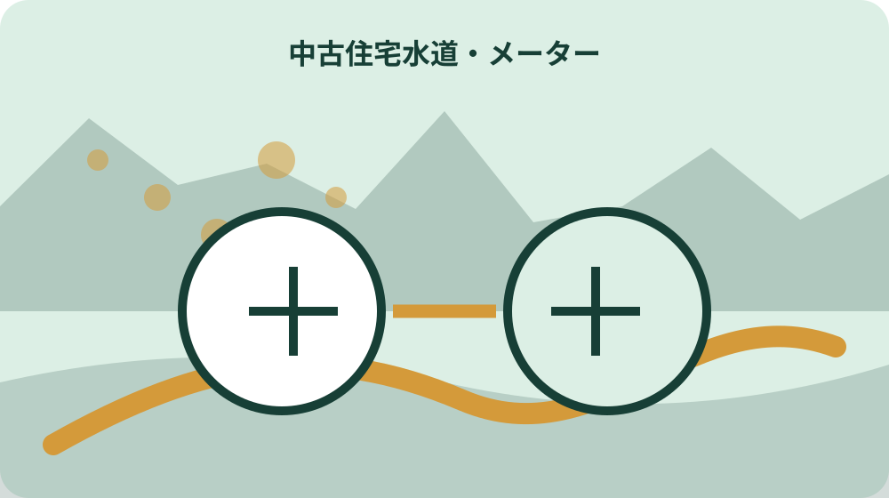
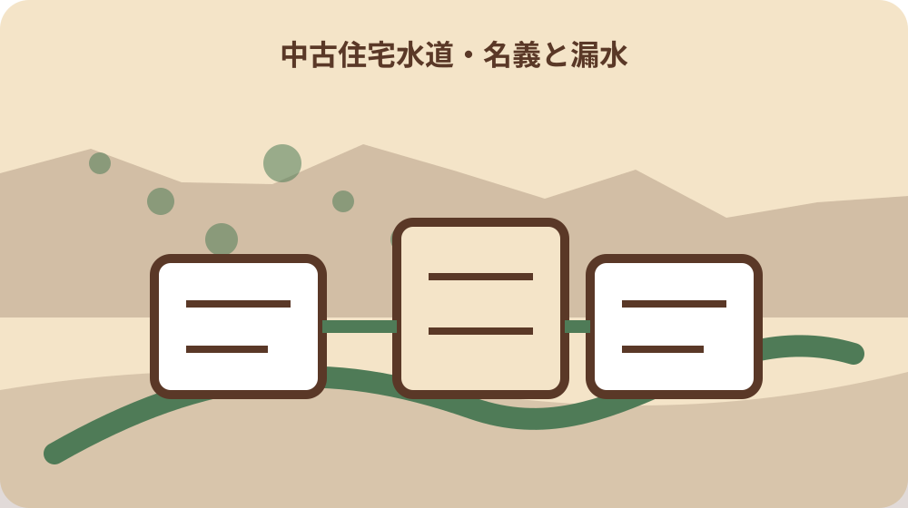

先に結論を確認する
この記事の答え：購入前に給水届、所有者名義、メーターパイロット、漏水修理歴、廃止の有無を現地で照合したいため、対象、基準日、公式資料、未確認事項を最初の一行へ置きます。
森町で最初に照合する条件：森町公式の二つの異なる案内を2026-08-13に確認する
給水届の名義欄を売主と照合する
『給水届の名義欄を売主と照合する』を調べる場面では、給水届の名義欄を売主と照合するでは、まず水道の開始、停止、名義変更には所定の給水届の提出が必要です。『給水届の名義欄を売主と照合する』を調べる場面では、この事実を出発点に、対象者・対象物・確認日を同じ行へ置きます。『給水届の名義欄を売主と照合する』を調べる場面では、森町で中古住宅の水道をメーター・名義・漏水で確認するの判断を口頭だけで進めず、根拠となるページ名と更新日も併記してください。
『給水届の名義欄を売主と照合する』を調べる場面では、公式案内の共通条件と、手元の個別事情を二列に分けます。『給水届の名義欄を売主と照合する』を調べる場面では、水道の開始、停止、名義変更には所定の給水届の提出が必要ですという根拠は左へ、給水届の名義欄を売主と照合するでまだ調べる対象は右へ置き、ページ本文から読み取れない事情を補いません。
『給水届の名義欄を売主と照合する』を調べる場面では、原資料の名称と確認日を記したら、数字・人名・物件番号を原文のまま転記します。『給水届の名義欄を売主と照合する』を調べる場面では、開栓・閉栓・廃止を区別するへ移る前に、森町へ尋ねる質問を一つだけ決め、回答欄を空けて待ちます。
『給水届の名義欄を売主と照合する』を調べる場面では、この節は、対象が一意に決まり、根拠URLへ戻れ、次の担当が読める状態で終了です。『給水届の名義欄を売主と照合する』を調べる場面では、給水届の名義欄を売主と照合するに未確認があれば、結論欄ではなく再確認日の欄を埋めます。
『給水届の名義欄を売主と照合する』を調べる場面では、1番目の確認として『給水届の名義欄を売主と照合する』を保存するときは、根拠となる『水道の開始、停止、名義変更には所定の給水届の提出が必要です』と今回の対象を一本の線で結びます。『給水届の名義欄を売主と照合する』を調べる場面では、資料の写しには取得日、個別メモには記入者、問い合わせ結果には回答日を付け、次に読む人が公式事実と家族の判断を取り違えない状態にしてください。
開栓・閉栓・廃止を区別する
『開栓・閉栓・廃止を区別する』用の一件表に、手元の書類を開いたら、開栓・閉栓・廃止を区別するに関係する名称、番号、日付を原文どおり写します。『開栓・閉栓・廃止を区別する』用の一件表に、略称や家族の呼び名へ置き換える前に、電話や問い合わせフォームだけでは開栓や閉栓を受け付けていませんという公式案内と一致する欄を見つけることが重要です。
『開栓・閉栓・廃止を区別する』用の一件表に、ここでは『電話や問い合わせフォームだけでは開栓や閉栓を受け付けていません』を確認線にします。『開栓・閉栓・廃止を区別する』用の一件表に、家族の記憶と公式記載が違うときは両方を残し、開栓・閉栓・廃止を区別するの判断材料として同じ意味に丸めないでください。
『開栓・閉栓・廃止を区別する』用の一件表に、書類の版、発行元、対象期間を余白へ書くと、後日の更新と区別できます。『開栓・閉栓・廃止を区別する』用の一件表に、続く届出期限を引渡日から逆算するで必要になる資料だけを抜き出し、原本の束は崩さず保管します。
『開栓・閉栓・廃止を区別する』用の一件表に、作業者は確認した日時と方法を署名代わりに残します。『開栓・閉栓・廃止を区別する』用の一件表に、開栓・閉栓・廃止を区別するの答えが出ない場合も、調査経路が見えるなら一段階は完了です。
『開栓・閉栓・廃止を区別する』用の一件表に、2番目の確認として『開栓・閉栓・廃止を区別する』を保存するときは、根拠となる『電話や問い合わせフォームだけでは開栓や閉栓を受け付けていません』と今回の対象を一本の線で結びます。『開栓・閉栓・廃止を区別する』用の一件表に、資料の写しには取得日、個別メモには記入者、問い合わせ結果には回答日を付け、次に読む人が公式事実と家族の判断を取り違えない状態にしてください。
届出期限を引渡日から逆算する
『届出期限を引渡日から逆算する』の対象について、この段階の要点は、給水届は閉開栓日の前営業日までに必着と案内されています。『届出期限を引渡日から逆算する』の対象について、対象外かもしれない情報まで結論に混ぜず、確認できた範囲を枠で囲みます。『届出期限を引渡日から逆算する』の対象について、次の窓口へ渡す際は、何を見て判断したかが一目で戻れる形にします。
『届出期限を引渡日から逆算する』の対象について、届出期限を引渡日から逆算するの判断は制度名ではなく対象の一致で行います。『届出期限を引渡日から逆算する』の対象について、給水届は閉開栓日の前営業日までに必着と案内されていますを参照しつつ、氏名・住所・年月・設備位置のうち記事に必要な識別子だけを確認票へ写します。
『届出期限を引渡日から逆算する』の対象について、窓口へ伝える文章は、現状、知りたいこと、持参できる資料の順に組み立てます。『届出期限を引渡日から逆算する』の対象について、メーター番号と設置場所を撮るへ渡す値を一つに絞ると、質問が別制度へ広がりません。
『届出期限を引渡日から逆算する』の対象について、確認済みには根拠資料、対象外には理由、未確認には連絡先を付けます。『届出期限を引渡日から逆算する』の対象について、三つの欄が埋まれば、届出期限を引渡日から逆算するを家族へ引き継げます。
『届出期限を引渡日から逆算する』の対象について、3番目の確認として『届出期限を引渡日から逆算する』を保存するときは、根拠となる『給水届は閉開栓日の前営業日までに必着と案内されています』と今回の対象を一本の線で結びます。『届出期限を引渡日から逆算する』の対象について、資料の写しには取得日、個別メモには記入者、問い合わせ結果には回答日を付け、次に読む人が公式事実と家族の判断を取り違えない状態にしてください。
メーター番号と設置場所を撮る
『メーター番号と設置場所を撮る』へ進む前に、メーター番号と設置場所を撮るを実行するときは、公式案内にある『使用者や所有者の変更、郵便物の宛名変更も届出対象です』を基準にします。『メーター番号と設置場所を撮る』へ進む前に、手続名が似ていても目的や起算日が違うため、一件の記録へ詰め込まず、証明・申請・現地確認を別行で管理します。
『メーター番号と設置場所を撮る』へ進む前に、『使用者や所有者の変更、郵便物の宛名変更も届出対象です』は全員に同じ結果を保証する文ではありません。『メーター番号と設置場所を撮る』へ進む前に、メーター番号と設置場所を撮るでは、公式条件に自分の対象が当てはまるかを一項目ずつ照合します。
『メーター番号と設置場所を撮る』へ進む前に、期限が見える資料には取得日も添えます。『メーター番号と設置場所を撮る』へ進む前に、次の全蛇口を閉めてパイロットを見るで古い数字を再利用しないよう、確認時点を日付で囲んでください。
『メーター番号と設置場所を撮る』へ進む前に、この場で決められない個別条件は窓口確認へ回します。『メーター番号と設置場所を撮る』へ進む前に、メーター番号と設置場所を撮るを推測で完了扱いにせず、回答者と回答日まで入った時点で確定にします。
『メーター番号と設置場所を撮る』へ進む前に、4番目の確認として『メーター番号と設置場所を撮る』を保存するときは、根拠となる『使用者や所有者の変更、郵便物の宛名変更も届出対象です』と今回の対象を一本の線で結びます。『メーター番号と設置場所を撮る』へ進む前に、資料の写しには取得日、個別メモには記入者、問い合わせ結果には回答日を付け、次に読む人が公式事実と家族の判断を取り違えない状態にしてください。

全蛇口を閉めてパイロットを見る
『全蛇口を閉めてパイロットを見る』の資料欄には、全蛇口を閉めてパイロットを見るでは、まず届出がなければ使用量がゼロでも基本料金がかかります。『全蛇口を閉めてパイロットを見る』の資料欄には、この事実を出発点に、対象者・対象物・確認日を同じ行へ置きます。『全蛇口を閉めてパイロットを見る』の資料欄には、森町で中古住宅の水道をメーター・名義・漏水で確認するの判断を口頭だけで進めず、根拠となるページ名と更新日も併記してください。
『全蛇口を閉めてパイロットを見る』の資料欄には、まず届出がなければ使用量がゼロでも基本料金がかかりますを確認票の見出し下へ引用せず要約します。『全蛇口を閉めてパイロットを見る』の資料欄には、その下に全蛇口を閉めてパイロットを見るの対象番号を置けば、一般案内と今回の一件を混同しにくくなります。
『全蛇口を閉めてパイロットを見る』の資料欄には、写真や画面保存には撮影方向・取得日・ページ名を付けます。『全蛇口を閉めてパイロットを見る』の資料欄には、漏水修理歴と工事業者を確認するで照合するとき、同名の別資料を開いても違いを見つけられます。
『全蛇口を閉めてパイロットを見る』の資料欄には、確認済みの記録を付ける前に、別の家族が同じ対象へ到達できるか試します。『全蛇口を閉めてパイロットを見る』の資料欄には、迷った箇所は全蛇口を閉めてパイロットを見るの備考へ戻し、判断語を削ります。
『全蛇口を閉めてパイロットを見る』の資料欄には、5番目の確認として『全蛇口を閉めてパイロットを見る』を保存するときは、根拠となる『届出がなければ使用量がゼロでも基本料金がかかります』と今回の対象を一本の線で結びます。『全蛇口を閉めてパイロットを見る』の資料欄には、資料の写しには取得日、個別メモには記入者、問い合わせ結果には回答日を付け、次に読む人が公式事実と家族の判断を取り違えない状態にしてください。
漏水修理歴と工事業者を確認する
『漏水修理歴と工事業者を確認する』を照合するとき、手元の書類を開いたら、漏水修理歴と工事業者を確認するに関係する名称、番号、日付を原文どおり写します。『漏水修理歴と工事業者を確認する』を照合するとき、略称や家族の呼び名へ置き換える前に、森町には料金を止めて権利だけ残す休止制度がありませんという公式案内と一致する欄を見つけることが重要です。
『漏水修理歴と工事業者を確認する』を照合するとき、漏水修理歴と工事業者を確認するで扱う公式事実は『森町には料金を止めて権利だけ残す休止制度がありません』です。『漏水修理歴と工事業者を確認する』を照合するとき、これに該当しない家族事情や現場状態は、別紙の個別確認欄へ移して根拠の種類を分けます。
『漏水修理歴と工事業者を確認する』を照合するとき、原本、写し、ウェブ画面は証拠力も更新方法も違います。『漏水修理歴と工事業者を確認する』を照合するとき、減免対象と通常負担を混同しないへ進む際は、どの媒体を見たかまで記録してください。
『漏水修理歴と工事業者を確認する』を照合するとき、対象、時点、資料、次の連絡先が四点とも読めればこの節を閉じます。『漏水修理歴と工事業者を確認する』を照合するとき、漏水修理歴と工事業者を確認するの結論だけを書いたメモは引継ぎ資料にしません。
『漏水修理歴と工事業者を確認する』を照合するとき、6番目の確認として『漏水修理歴と工事業者を確認する』を保存するときは、根拠となる『森町には料金を止めて権利だけ残す休止制度がありません』と今回の対象を一本の線で結びます。『漏水修理歴と工事業者を確認する』を照合するとき、資料の写しには取得日、個別メモには記入者、問い合わせ結果には回答日を付け、次に読む人が公式事実と家族の判断を取り違えない状態にしてください。
減免対象と通常負担を混同しない
『減免対象と通常負担を混同しない』の質問票で、この段階の要点は、一度廃止すると再使用は新規扱いとなり加入金が発生します。『減免対象と通常負担を混同しない』の質問票で、対象外かもしれない情報まで結論に混ぜず、確認できた範囲を枠で囲みます。『減免対象と通常負担を混同しない』の質問票で、次の窓口へ渡す際は、何を見て判断したかが一目で戻れる形にします。
『減免対象と通常負担を混同しない』の質問票で、資料上の条件を先に固定します。『減免対象と通常負担を混同しない』の質問票で、今回は一度廃止すると再使用は新規扱いとなり加入金が発生しますが基準なので、減免対象と通常負担を混同しないに関係する手元資料へ同じ用語があるかを探します。
『減免対象と通常負担を混同しない』の質問票で、用語が一致しないときは勝手に言い換えず、双方の名称を並記します。『減免対象と通常負担を混同しない』の質問票で、指定工事事業者の証明を残すの窓口質問には、その差を短く添えます。
指定工事事業者の証明を残す
『指定工事事業者の証明を残す』の期限管理では、指定工事事業者の証明を残すを実行するときは、公式案内にある『全蛇口を閉めてメーターのパイロットが動けば漏水の可能性があります』を基準にします。『指定工事事業者の証明を残す』の期限管理では、手続名が似ていても目的や起算日が違うため、一件の記録へ詰め込まず、証明・申請・現地確認を別行で管理します。
『指定工事事業者の証明を残す』の期限管理では、全蛇口を閉めてメーターのパイロットが動けば漏水の可能性がありますという案内から、今回確認すべき欄だけを抽出します。『指定工事事業者の証明を残す』の期限管理では、指定工事事業者の証明を残すと無関係な制度説明まで転記すると重要な差が埋もれるため、採用理由も一言添えます。
『指定工事事業者の証明を残す』の期限管理では、数字は単位と起算点を離しません。『指定工事事業者の証明を残す』の期限管理では、廃止後の新規加入金を確認するへ数値を渡すときは、誰の、何の、いつの数字かを一行で説明します。
廃止後の新規加入金を確認する
『廃止後の新規加入金を確認する』を家族で見るなら、廃止後の新規加入金を確認するでは、まず宅地内漏水の料金は原則として使用者負担です。『廃止後の新規加入金を確認する』を家族で見るなら、この事実を出発点に、対象者・対象物・確認日を同じ行へ置きます。『廃止後の新規加入金を確認する』を家族で見るなら、森町で中古住宅の水道をメーター・名義・漏水で確認するの判断を口頭だけで進めず、根拠となるページ名と更新日も併記してください。
『廃止後の新規加入金を確認する』を家族で見るなら、この節の根拠は宅地内漏水の料金は原則として使用者負担ですです。『廃止後の新規加入金を確認する』を家族で見るなら、廃止後の新規加入金を確認するでは、公式の対象範囲と実物の状態を別の色で記し、資料だけで現地確認を済ませません。
『廃止後の新規加入金を確認する』を家族で見るなら、問い合わせで得た回答は、質問文と組にして保存します。『廃止後の新規加入金を確認する』を家族で見るなら、休止制度がない前提で選ぶに関する別回答と混ざらないよう、担当部署も同じ行へ置きます。

休止制度がない前提で選ぶ
『休止制度がない前提で選ぶ』の更新確認時に、手元の書類を開いたら、休止制度がない前提で選ぶに関係する名称、番号、日付を原文どおり写します。『休止制度がない前提で選ぶ』の更新確認時に、略称や家族の呼び名へ置き換える前に、減免は発見困難な漏水を町指定業者が修理した場合などに限られますという公式案内と一致する欄を見つけることが重要です。
『休止制度がない前提で選ぶ』の更新確認時に、休止制度がない前提で選ぶの入口では、減免は発見困難な漏水を町指定業者が修理した場合などに限られますを現在の公式条件として採用します。『休止制度がない前提で選ぶ』の更新確認時に、過去の案内を持つ場合は上書きせず、旧版として横へ残してください。
『休止制度がない前提で選ぶ』の更新確認時に、更新差を見つけたら、実行予定日より前に窓口へ確認します。『休止制度がない前提で選ぶ』の更新確認時に、大石の視点：水が出るだけで合格にしないの作業日は、回答後に決める方が手戻りを減らせます。
大石の視点：水が出るだけで合格にしない
『大石の視点：水が出るだけで合格にしない』という実務提案では、この段階の要点は、減免申請には指定業者の証明押印と修繕工事写真が必要です。『大石の視点：水が出るだけで合格にしない』という実務提案では、対象外かもしれない情報まで結論に混ぜず、確認できた範囲を枠で囲みます。『大石の視点：水が出るだけで合格にしない』という実務提案では、次の窓口へ渡す際は、何を見て判断したかが一目で戻れる形にします。
『大石の視点：水が出るだけで合格にしない』という実務提案では、公的事実と私の提案を混ぜません。『大石の視点：水が出るだけで合格にしない』という実務提案では、減免申請には指定業者の証明押印と修繕工事写真が必要ですは資料で確認できる内容であり、大石の視点：水が出るだけで合格にしないを一行管理する方法は私、大石浩之の実務提案です。
『大石の視点：水が出るだけで合格にしない』という実務提案では、提案は森町や所管機関の公式見解ではありません。『大石の視点：水が出るだけで合格にしない』という実務提案では、引渡日に水道設備票を完成するへ進む順序も個別事情で変わるため、担当窓口の回答を優先します。
引渡日に水道設備票を完成する
『引渡日に水道設備票を完成する』の最終点検として、引渡日に水道設備票を完成するを実行するときは、公式案内にある『水道法は水道事業による清浄で豊富な水の供給を図る国の基本法です』を基準にします。『引渡日に水道設備票を完成する』の最終点検として、手続名が似ていても目的や起算日が違うため、一件の記録へ詰め込まず、証明・申請・現地確認を別行で管理します。
『引渡日に水道設備票を完成する』の最終点検として、最後に水道法は水道事業による清浄で豊富な水の供給を図る国の基本法ですをもう一度原資料で照合します。『引渡日に水道設備票を完成する』の最終点検として、引渡日に水道設備票を完成するの記録が制度の説明だけになっていないか、今回の対象を示す番号や日付があるかを確認してください。
『引渡日に水道設備票を完成する』の最終点検として、給水届の名義欄を売主と照合するへ引き継ぐ資料は、最新版、旧版、個別証拠の三束に分けます。『引渡日に水道設備票を完成する』の最終点検として、紛失防止のため保管場所とファイル名も一覧へ入れます。